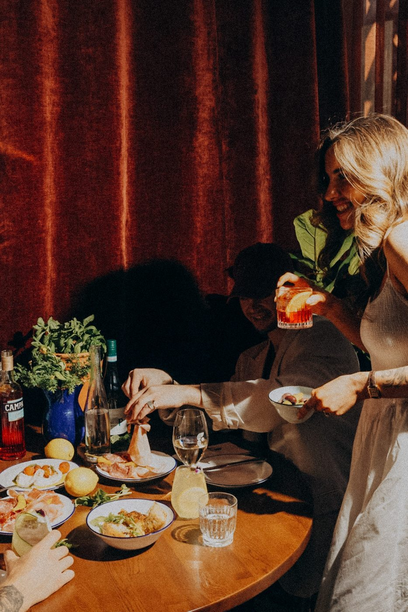

Modern Italian · The Crossing, Christchurch
Italian soul,
vibrant dining,
private events in Christchurch
Delicious Italian food, curated cocktails and seamless hospitality across two vibrant levels in the heart of the city.
An Italian restaurant, aperitivo bar and function venue in the heart of Christchurch — at The Crossing, a short walk from One NZ Stadium.


Open daily
Bar 4pm ·
kitchen 5pm